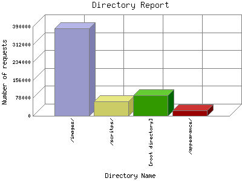

Analog 5.24
Analog 5.24 Report Magic for Analog 2.13
Report Magic for Analog 2.13The Directory Report analyzes accesses to this web site's directories. This information can be useful in determining the most requested areas.
This report shows all results. This report is sorted by number of requests.

| Directory Name | Number of requests | Percentage of bytes transferred in the last 7 days | |
|---|---|---|---|
| 1. | /images/ | 381,760 | 86.19% |
| /images/spring/ | 46,904 | 5.81% | |
| /images/winter/ | 37,134 | 6.30% | |
| /images/fall/ | 40,184 | 5.9% | |
| /images/gallery/ | 43,762 | 12.70% | |
| /images/summer/ | 7,063 | 1.70% | |
| 2. | /scritps/ | 62,743 | 7.40% |
| 3. | [root directory] | 90,265 | 6.17% |
| 4. | /appearance/ | 23,519 | 0.27% |
This report was generated on August 28, 2011 02:33.
Report time frame August 1, 2008 06:00 to August 28, 2011 04:03.
| Web statistics report produced by: | |
| Analog 5.24 | Report Magic for Analog 2.13 |